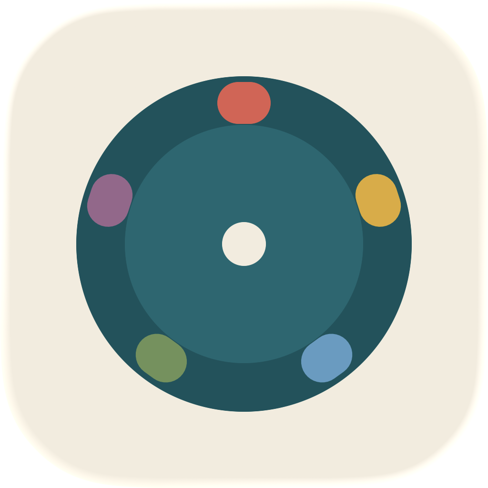
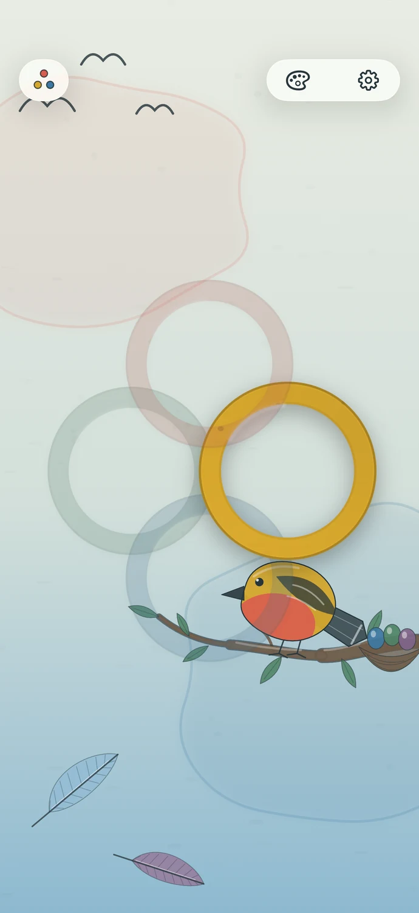
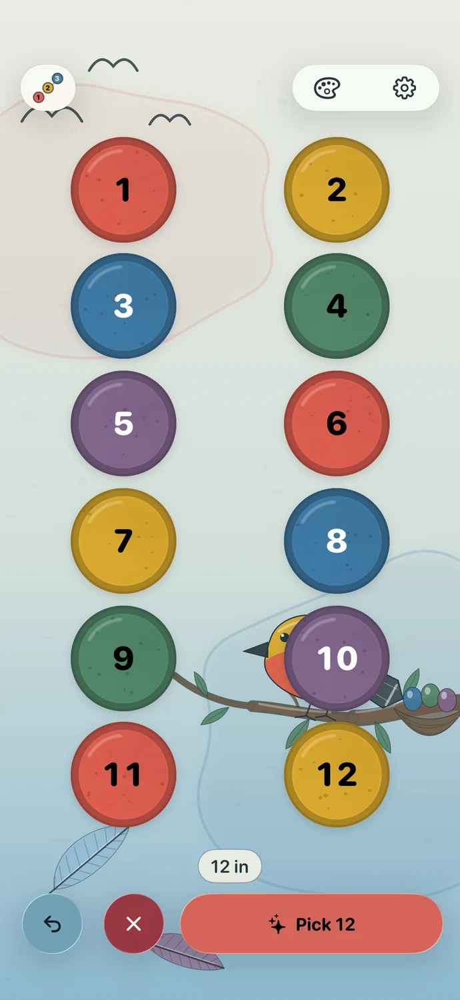
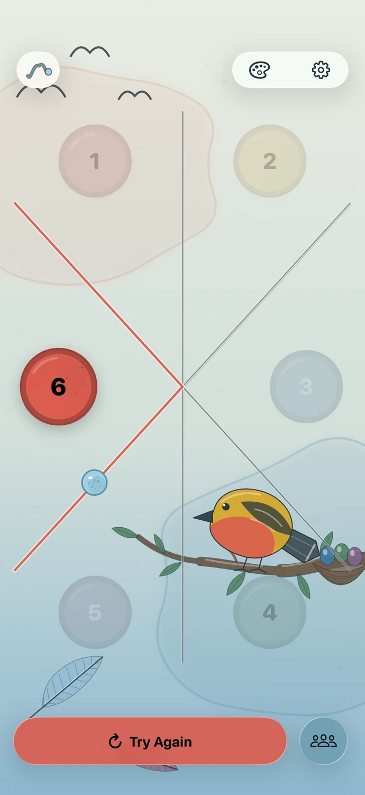
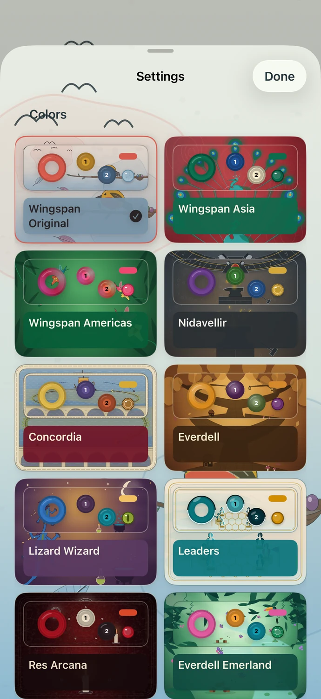

Chooser
Two to five people hold a finger on the screen. After a short buildup, one ring marks who goes first.

Free. No subscription.
Fingers down, tap to join, or flick a pinball. Pick your first player fairly, with room for up to 50 people and fourteen illustrated worlds to suit your game night.
Download on the App Store
A choice for your whole group
Hold a finger, take turns tapping, or flick the ball. Choose a mode from the menu to fit your group.
Two to five people hold a finger on the screen. After a short buildup, one ring marks who goes first.
Each person taps once to join. When everyone’s in, pick from the group. Room for up to 50 players.

Two to twelve people tap near their seats. Flick the ball and follow the bounces to your first player. Every seat has an equal chance.

Birds and watercolor, a lantern-lit tree, stained glass, dragons, or an ocean that fades into the deep. Each world brings its own illustrated board, player pieces, and Pinball details.
Tap the palette button to open Worlds. Pick a board and you’re straight back to your game. The same world carries across all three modes.
For a surprise, tap with three fingers when a choice isn’t in progress. A different world appears without clearing your group. VoiceOver offers the same option through Shuffle colors.

After a Tap In or Pinball result, tap the background to choose again with the same players. In Tap In, Undo removes an accidental extra entry.
Make the current mode your launch default in the mode menu. Or use Open Chooser, Open Tap In, and Open Pinball in Shortcuts to jump straight into a session.
A short welcome introduces all three modes. Replay it in Settings, or open How It Works whenever you need a reminder.
Ready for game night
Free, with no subscription, accounts, or ads. Works offline on iPhone and iPad, with spoken VoiceOver results, larger text, reduced motion, increased contrast, and cues that don’t rely on color alone.
Download on the App Store